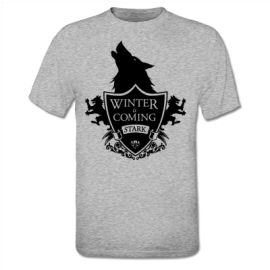
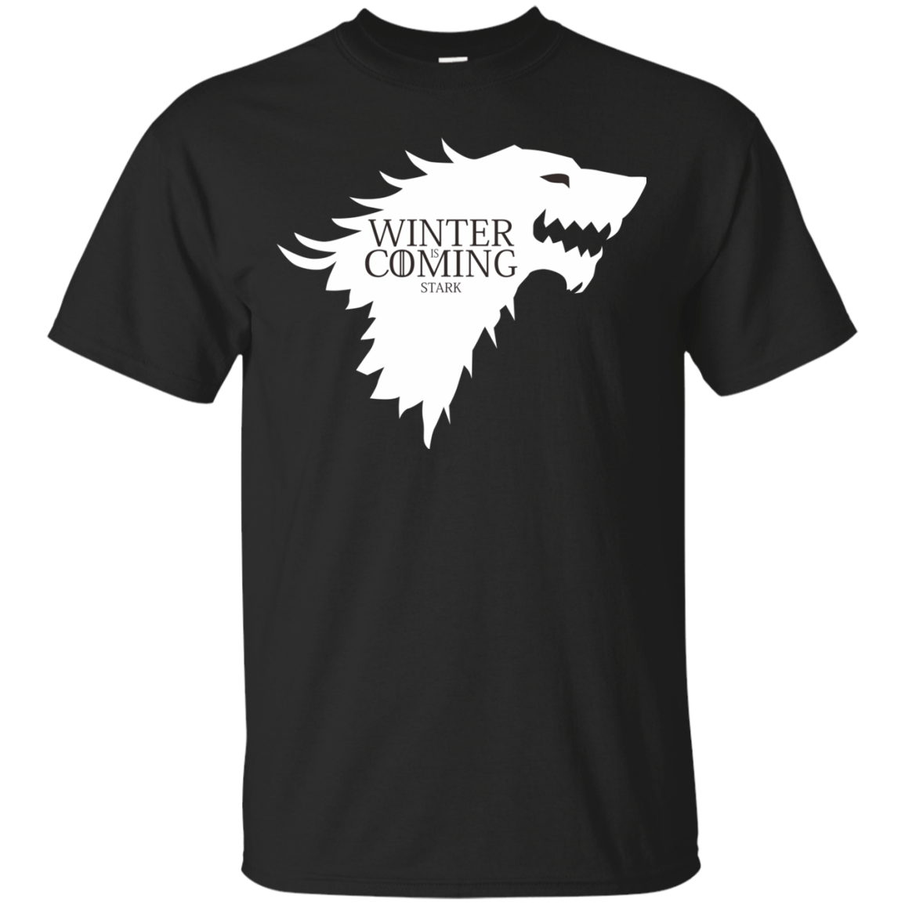
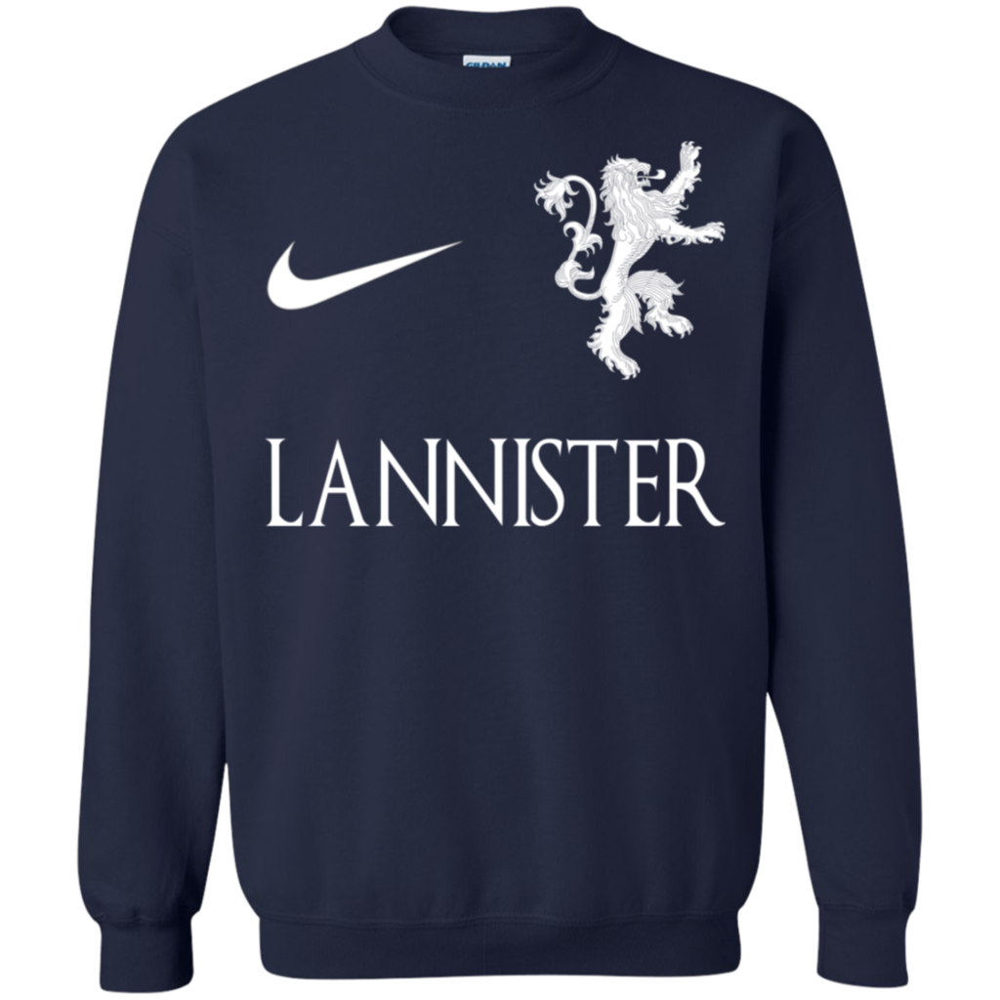
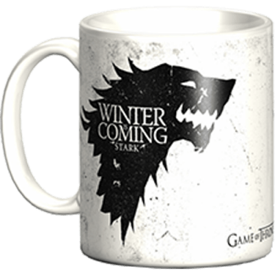
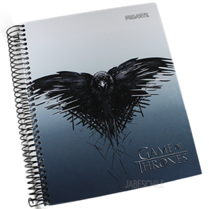
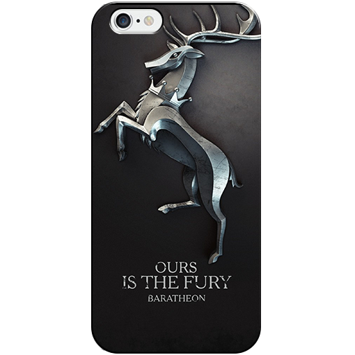
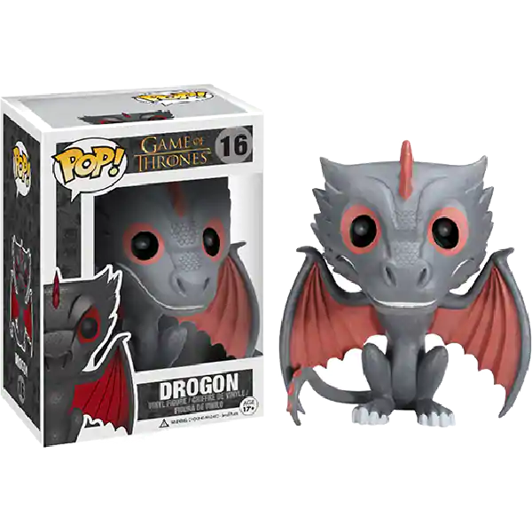

SINOPSIS
En una tierra donde los veranos duran décadas y los inviernos pueden durar toda una vida, los problemas acechan. Desde las maquinaciones del sur a las salvajes tierras del este, pasando por el helado norte y el milenario Muro que protege el reino de las fuerzas tenebrosas, dos poderosas familias mantienen un enfrentamiento letal por gobernar los Siete Reinos de Poniente. Mientras la traición, la lujuria y las fuerzas sobrenaturales sacuden los pilares de los Reinos, la sangrienta batalla por el Trono de Hierro tendrá consecuencias imprevistas y trascendentales. El invierno se acerca. Que empiece Juego de Tronos.

<
>
Al comienzo de la serie, vemos a Robert Baratheon, Rey de Poniente y antiguo amigo de Ned, llegar a Invernalia para pedir a Ned que se vaya con él a Desembarco del Rey, donde reside junto a su mujer, Cersei Lannister, para convertirse en su consejero.
Después del final de primera temporada, la guerra entre familias no ha hecho más que comenzar. En el Norte, Robb Stark se entera de la muerte de su padre Ned por mandato de los Lannister y les declara la guerra. Así, el hijo mayor de los Stark captura a Jaime Lannister, haciéndole prisionero. Pero su madre, Catelyn Stark, decide liberlarle para intercambiarlo por sus hijas, Sansa y Arya.
Después de lo sucedido en primera temporada y, sobre todo, la batalla de Aguasnegras, final de la segunda temporada, la guerra por el Trono de Hierro es inminente. Pero no solo tratarán de conquistarlo los vivos... ya que entran en el juego los Caminantes Blancos.
Después de los eventos de la temporada 3 los Stark están más divididos que nunca. Sansa sigue atrapada en Desembarco del Rey a merced de los Lannister y de Joffrey, que se casa con Margaery Tyrell para mantener una alianza entre las familias. Pero durante el banquete, Joffrey muere envenenado y, en su último aliento, señala a Tyrion, que es acusado del asesinato. Sansa, que observaba sorprendida, huye el lugar gracias a Meñique, que le ayuda a escapar de la ciudad, camino del Nido de Águilas, donde vive la tía de Sansa.
En Desembarco del Rey, después de los eventos de la temporada 4 (muerte de Tywin incluida), hay nuevo rey: Tommen, hermano de Joffrey e hijo de Cersei y Jaime Lannister. Para seguir manteniendo la alianza con la casa Tyrell, Tommen se casa con Margaery de la que se enamora. Pero hay un problema: un grupo de fanáticos religiosos conocido como 'Los Gorriones' ha empezado a hacer de las suyas en la ciudad y descubren la relación incestuosa entre Jaime y Cersei, encarcelando a esta última.
Temporada 1
Temporada 2
Temporada 3
Temporada 4
Temporada 5
Temporada 6
Temporada 7
Temporada 8
TIENDA
Ropa
Camiseta Winter Is Coming Blanca
14'99€
Camiseta Winter Is Coming Negra
14'99€
Sudadera STARK

22'99€
Sudadera LANNISTER
22'99€
Otros
Taza de trono
9'99€
Cuaderno
5'99€
Funda
4'99€
Funko POP
9'99€